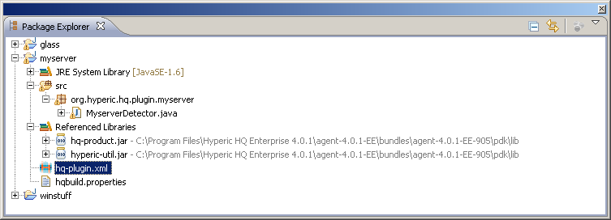

Project structure is rather simple. On root level, we have input/output folders, where source java files are stored and compiled by eclipse.
hqbuild.properties files will contain settings needed for correct classpath referencing and packaging.
hq-plugin.xml and plugin.properties are files used by HQ server and plug-ins. These files are exported without any modifications.
